- cloud2trees: Aerial point cloud data to forest inventory tree lists
- Installation and Setup
- Extract Trees from Point Cloud: Default
- Individual Tree Detection (ITD) Tuning
- Extract Trees from Point Cloud: Custom
- Format
cloud2trees()output for LANL TREES - Extract Raster Data from Point Cloud
- Extract Trees from Raster Data
- Estimate Tree DBH for a Tree List
- Estimate Tree Forest Type for a Tree List
- Estimate Tree CBH for a Tree List
- Estimate Tree HMD for a Tree List
- Estimate Tree Biomass for a Tree List

cloud2trees: Aerial point cloud data to forest inventory tree lists
The goal of cloud2trees is to provide accessible routines for processing point cloud data collected by airborne lidar or developed using UAS imagery and photogrammetry (e.g. structure from motion). The cloud2trees package implements some of the methods outlined in the literature below. Some of the methodologies implemented in the cloud2trees package have been developed specifically to quantify conifer forest structure and may not be appropriate for other uses.
- Swayze, Neal C., and Wade T. Tinkham. “Application of unmanned aerial system structure from motion point cloud detected tree heights and stem diameters to model missing stem diameters.” MethodsX 9 (2022): 101729.
- Tinkham, Wade T., Neal C. Swayze, Chad M. Hoffman, Lauren E. Lad, and Mike A. Battaglia. “Modeling the missing DBHs: Influence of model form on UAV DBH characterization.” Forests 13, no. 12 (2022): 2077.
- Creasy, Matthew B., Wade T. Tinkham, Chad M. Hoffman, and Jody C. Vogeler. “Potential for individual tree monitoring in ponderosa pine dominated forests using unmanned aerial system structure from motion point clouds.” Canadian Journal of Forest Research 51, no. 8 (2021): 1093-1105.
- Almeida, Danilo Roberti Alves de, Scott C. Stark, Gang Shao, Juliana Schietti, Bruce Walker Nelson, Carlos Alberto Silva, Eric Bastos Gorgens, Ruben Valbuena, Daniel de Almeida Papa, and Pedro Henrique Santin Brancalion. “Optimizing the remote detection of tropical rainforest structure with airborne lidar: Leaf area profile sensitivity to pulse density and spatial sampling.” Remote Sensing 11, no. 1 (2019): 92.
- Viedma, O., C. A. Silva, J. M. Moreno, and A. T. Hudak. “LadderFuelsR: A new automated tool for vertical fuel continuity analysis and crown base height detection using light detection and ranging.” Methods in Ecology and Evolution (2024).
The development and functionality of the cloud2trees package relies extensively on the groundbreaking work of others. We gratefully acknowledge and encourage users to properly cite the authors and contributors behind the following essential R packages:
-
lidRpackage (https://github.com/r-lidar/lidR) for fundamental point cloud processing capabilities and routines -
lasRpackage (https://r-lidar.github.io/lasR) enables large-scale point cloud processing with speed -
TreeLSpackage (https://github.com/tiagodc/TreeLS) helps us extract DBH directly from the point cloud -
leafRpackage (https://github.com/DRAAlmeida/leafR) computes leaf area density (LAD) profiles from the point cloud -
LadderFuelsRpackage (https://github.com/olgaviedma/LadderFuelsR) helps us extract CBH from the point cloud
Installation and Setup
A full demonstration of the install and setup of cloud2trees including dependencies is available at the Setup demonstration
It is recommended that users follow this full install demonstration which includes program functionality checks after the installation steps are completed.
Extract Trees from Point Cloud: Default
In addition to cloud2trees, we’ll be using the tidyverse, sf, and terra in the examples below.
library(cloud2trees)
# install.packages("tidyverse")
library(tidyverse)
# install.packages("sf")
library(sf)
# install.packages("terra")
library(terra)The cloud2trees() function is an all-in-one function to process raw .las|.laz files to generate a CHM raster (.tif), a DTM raster (.tif), and a tree list with tree location, height, and DBH.
For our example we’ll use the MixedConifer.laz that ships with the lidR package (https://r-lidar.github.io/lidRbook/).
A most basic example using all cloud2trees() function defaults with a single .laz file and writing the output to a temporary directory is:
# a test las file but this could also be a directory path with >1 .las|.laz files
i <- system.file("extdata", "MixedConifer.laz", package="lidR")
# run it
cloud2trees_ans <- cloud2trees::cloud2trees(output_dir = tempdir(), input_las_dir = i)Let’s check out what is included in the return from the cloud2trees() function.
# what is it?
cloud2trees_ans %>% names()
#> [1] "crowns_sf" "treetops_sf" "dtm_rast" "chm_rast"
#> [5] "foresttype_rast"There is a digital terrain model (DTM) raster which we can plot using terra::plot()

There is a canopy height model (CHM) raster which we can plot using terra::plot()
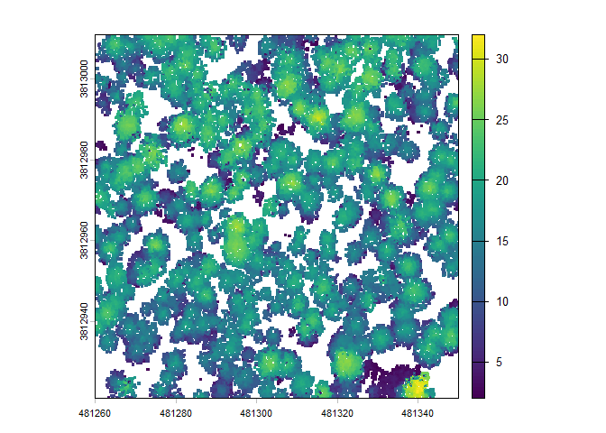
A spatial data frame with tree crown polygons is returned.
# there are tree crowns
cloud2trees_ans$crowns_sf %>% dplyr::glimpse()
#> Rows: 340
#> Columns: 27
#> $ treeID <chr> "1_481294.4_3813010.9", "2_481312.9_3813010.…
#> $ tree_height_m <dbl> 15.85, 13.44, 22.07, 22.93, 24.43, 22.23, 11…
#> $ tree_x <dbl> 481294.4, 481312.9, 481325.1, 481335.9, 4812…
#> $ tree_y <dbl> 3813011, 3813011, 3813011, 3813011, 3813011,…
#> $ crown_area_m2 <dbl> 10.8750, 6.5000, 6.3750, 27.0625, 10.1250, 1…
#> $ geometry <GEOMETRY [m]> POLYGON ((481292.5 3813011,..., POL…
#> $ fia_est_dbh_cm <dbl> NA, NA, NA, NA, NA, NA, NA, NA, NA, NA, NA, …
#> $ fia_est_dbh_cm_lower <dbl> NA, NA, NA, NA, NA, NA, NA, NA, NA, NA, NA, …
#> $ fia_est_dbh_cm_upper <dbl> NA, NA, NA, NA, NA, NA, NA, NA, NA, NA, NA, …
#> $ dbh_cm <dbl> NA, NA, NA, NA, NA, NA, NA, NA, NA, NA, NA, …
#> $ is_training_data <lgl> NA, NA, NA, NA, NA, NA, NA, NA, NA, NA, NA, …
#> $ dbh_m <dbl> NA, NA, NA, NA, NA, NA, NA, NA, NA, NA, NA, …
#> $ radius_m <dbl> NA, NA, NA, NA, NA, NA, NA, NA, NA, NA, NA, …
#> $ basal_area_m2 <dbl> NA, NA, NA, NA, NA, NA, NA, NA, NA, NA, NA, …
#> $ basal_area_ft2 <dbl> NA, NA, NA, NA, NA, NA, NA, NA, NA, NA, NA, …
#> $ ptcld_extracted_dbh_cm <dbl> NA, NA, NA, NA, NA, NA, NA, NA, NA, NA, NA, …
#> $ ptcld_predicted_dbh_cm <dbl> NA, NA, NA, NA, NA, NA, NA, NA, NA, NA, NA, …
#> $ tree_cbh_m <dbl> NA, NA, NA, NA, NA, NA, NA, NA, NA, NA, NA, …
#> $ is_training_cbh <lgl> NA, NA, NA, NA, NA, NA, NA, NA, NA, NA, NA, …
#> $ forest_type_group_code <chr> NA, NA, NA, NA, NA, NA, NA, NA, NA, NA, NA, …
#> $ forest_type_group <chr> NA, NA, NA, NA, NA, NA, NA, NA, NA, NA, NA, …
#> $ hardwood_softwood <chr> NA, NA, NA, NA, NA, NA, NA, NA, NA, NA, NA, …
#> $ comp_trees_per_ha <dbl> NA, NA, NA, NA, NA, NA, NA, NA, NA, NA, NA, …
#> $ comp_relative_tree_height <dbl> NA, NA, NA, NA, NA, NA, NA, NA, NA, NA, NA, …
#> $ comp_dist_to_nearest_m <dbl> NA, NA, NA, NA, NA, NA, NA, NA, NA, NA, NA, …
#> $ max_crown_diam_height_m <dbl> NA, NA, NA, NA, NA, NA, NA, NA, NA, NA, NA, …
#> $ is_training_hmd <lgl> NA, NA, NA, NA, NA, NA, NA, NA, NA, NA, NA, …Notice that all of the dbh, cbh, forest_type, HMD (max_crown_diam_height_m), and competition (comp_) columns do not have data. To estimate these values, we need to explicitly tell the cloud2trees() to perform the processing required by setting the parameters:
-
estimate_tree_dbh=TRUEfor DBH (see alsotrees_dbh()) -
estimate_tree_cbh=TRUEfor CBH (see alsotrees_cbh()) -
estimate_tree_type=TRUEfor forest type (see alsotrees_type()) -
estimate_tree_hmd=TRUEfor tree HMD (see alsotrees_hmd()) -
estimate_tree_competition=TRUEfor competition (see alsotrees_competition())
Let’s plot these tree crown polygons using ggplot2::ggplot() with some custom plot settings.
cloud2trees_ans$crowns_sf %>%
ggplot2::ggplot(mapping = ggplot2::aes(fill = tree_height_m)) +
ggplot2::geom_sf() +
ggplot2::scale_fill_distiller(palette = "Oranges", name = "tree ht. (m)", direction = 1) +
ggplot2::theme_void() +
ggplot2::theme(legend.position = "top", legend.direction = "horizontal")
A spatial data frame with tree top points is returned.
# there are tree top points
cloud2trees_ans$treetops_sf %>% dplyr::glimpse()
#> Rows: 340
#> Columns: 25
#> $ treeID <chr> "1_481294.4_3813010.9", "2_481312.9_3813010.…
#> $ tree_height_m <dbl> 15.85, 13.44, 22.07, 22.93, 24.43, 22.23, 11…
#> $ crown_area_m2 <dbl> 10.8750, 6.5000, 6.3750, 27.0625, 10.1250, 1…
#> $ fia_est_dbh_cm <dbl> NA, NA, NA, NA, NA, NA, NA, NA, NA, NA, NA, …
#> $ fia_est_dbh_cm_lower <dbl> NA, NA, NA, NA, NA, NA, NA, NA, NA, NA, NA, …
#> $ fia_est_dbh_cm_upper <dbl> NA, NA, NA, NA, NA, NA, NA, NA, NA, NA, NA, …
#> $ dbh_cm <dbl> NA, NA, NA, NA, NA, NA, NA, NA, NA, NA, NA, …
#> $ is_training_data <lgl> NA, NA, NA, NA, NA, NA, NA, NA, NA, NA, NA, …
#> $ dbh_m <dbl> NA, NA, NA, NA, NA, NA, NA, NA, NA, NA, NA, …
#> $ radius_m <dbl> NA, NA, NA, NA, NA, NA, NA, NA, NA, NA, NA, …
#> $ basal_area_m2 <dbl> NA, NA, NA, NA, NA, NA, NA, NA, NA, NA, NA, …
#> $ basal_area_ft2 <dbl> NA, NA, NA, NA, NA, NA, NA, NA, NA, NA, NA, …
#> $ ptcld_extracted_dbh_cm <dbl> NA, NA, NA, NA, NA, NA, NA, NA, NA, NA, NA, …
#> $ ptcld_predicted_dbh_cm <dbl> NA, NA, NA, NA, NA, NA, NA, NA, NA, NA, NA, …
#> $ tree_cbh_m <dbl> NA, NA, NA, NA, NA, NA, NA, NA, NA, NA, NA, …
#> $ is_training_cbh <lgl> NA, NA, NA, NA, NA, NA, NA, NA, NA, NA, NA, …
#> $ forest_type_group_code <chr> NA, NA, NA, NA, NA, NA, NA, NA, NA, NA, NA, …
#> $ forest_type_group <chr> NA, NA, NA, NA, NA, NA, NA, NA, NA, NA, NA, …
#> $ hardwood_softwood <chr> NA, NA, NA, NA, NA, NA, NA, NA, NA, NA, NA, …
#> $ comp_trees_per_ha <dbl> NA, NA, NA, NA, NA, NA, NA, NA, NA, NA, NA, …
#> $ comp_relative_tree_height <dbl> NA, NA, NA, NA, NA, NA, NA, NA, NA, NA, NA, …
#> $ comp_dist_to_nearest_m <dbl> NA, NA, NA, NA, NA, NA, NA, NA, NA, NA, NA, …
#> $ max_crown_diam_height_m <dbl> NA, NA, NA, NA, NA, NA, NA, NA, NA, NA, NA, …
#> $ is_training_hmd <lgl> NA, NA, NA, NA, NA, NA, NA, NA, NA, NA, NA, …
#> $ geometry <POINT [m]> POINT (481294.4 3813011), POINT (48131…Notice that cloud2trees_ans$crowns_sf and cloud2trees_ans$treetops_sf have the exact same structure but one is spatial polygons and the other is spatial points.
Let’s plot these tree top points using ggplot2::ggplot() with some custom plot settings.
cloud2trees_ans$treetops_sf %>%
ggplot2::ggplot(mapping = ggplot2::aes(color = tree_height_m)) +
ggplot2::geom_sf() +
ggplot2::scale_color_distiller(palette = "Oranges", name = "tree ht. (m)", direction = 1) +
ggplot2::theme_void() +
ggplot2::theme(legend.position = "top", legend.direction = "horizontal")
It is also the case that the points in cloud2trees_ans$treetops_sf will match to exactly one crown polygon in cloud2trees_ans$crowns_sf.
ggplot2::ggplot() +
ggplot2::geom_sf(data = cloud2trees_ans$crowns_sf, mapping = ggplot2::aes(fill = tree_height_m)) +
ggplot2::geom_sf(data = cloud2trees_ans$treetops_sf, shape = 20) +
ggplot2::scale_fill_distiller(palette = "Oranges", name = "tree ht. (m)", direction = 1) +
ggplot2::theme_void() +
ggplot2::theme(legend.position = "top", legend.direction = "horizontal")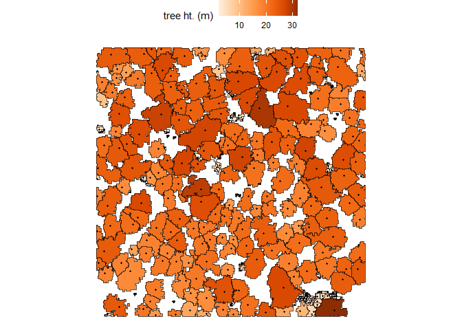
Individual Tree Detection (ITD) Tuning
The cloud2trees package performs individual tree detection using lidR::locate_trees() with the lidR::lmf() algorithm. The local maximum filter algorithm allows for a constant window size or a variable window size defined by a function. See the lidR package book section by point cloud processing expert Jean-Romain Roussel for excellent detail on ITD and defining window size.
The itd_tuning() function is used to visually assess tree crown delineation results from different window size functions used for the detection of individual trees. itd_tuning() allows users to test different window size functions on a sample of data to determine which function is most suitable for the area being analyzed. The preferred function can then be used in the ws parameter in raster2trees() and cloud2trees().
It is generally recommended that a different window size function is defined for each region of your study area with significantly different forest structure. For example, one might want to define a different window size for each forest type or different silvicultural treatment. To accomplish this with the current version of cloud2trees will require the analyst to pre-process the aerial point cloud data to split up these distinct regions, perform ITD on each region, and compile the tree list in post-processing.
Default ITD window size functions
We’ll continue to use the MixedConifer.laz that ships with the lidR package for our example. itd_tuning() enables users to sample from up to five 0.1 ha plots (n_samples parameter) that are randomly selected from within the bounding box of the point cloud data coverage. A function or a named list of functions can be tested using the ws_fn_list parameter which can also be left at the default value (NULL) to test default exponential (concave up), linear, and logarithmic (concave down) functions. We’ll run itd_tuning() with all default options to start.
itd_tuning_ans <- itd_tuning(input_las_dir = i, n_samples = 2)Let’s check out what is included in the return from the itd_tuning() function.
There is a plot of the different ITD window size functions tested (columns) over the different 0.1 ha sample plots (plot rows) and the number of individual trees extracted shown outlined in gray overlaid on the canopy height model (CHM).
itd_tuning_ans$plot_samples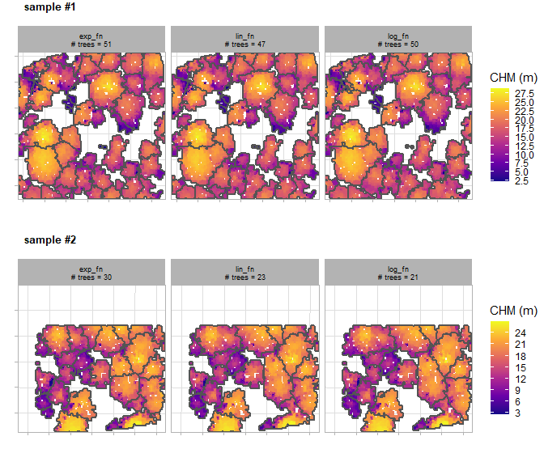
There is a plot that summarizes the trees detected based on the different ITD window search functions tested for each sample plot area. The first view provides aggregated plot summary metrics including trees per hectare (TPH), mean tree height in meters, and mean crown diameter in meters. The second view shows the tree size-class distribution showing the proportion of trees (bar label) and count of trees (y-axis) using five equally spaced height bins to enhance insight into the effect of the search function. For example, this distribution can help diagnose issues such as the over-segmentation of small trees, which can inflate TPH estimates, or, conversely, the failure to detect a targeted height-class range. The third view shows the tree height-to-crown diameter relationship. The goal of the window search function is to accurately model this relationship, and a positive correlation is expected across most forest types with any deviations from the general trend suggesting a need for further tuning (e.g. small trees with unrealistically wide crowns).
itd_tuning_ans$plot_sample_summary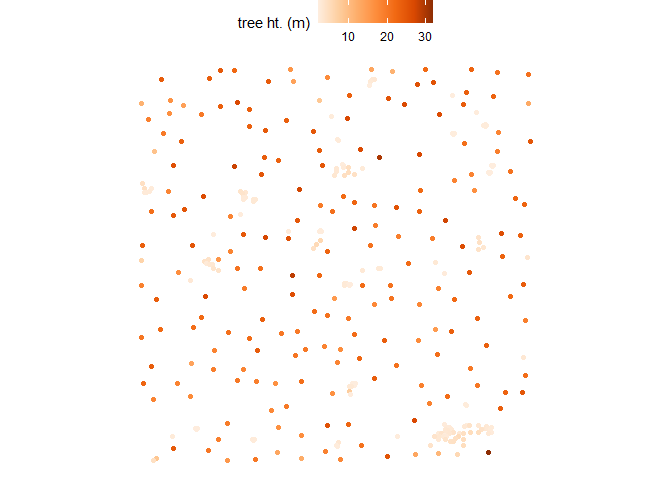
if we think that the “lin_fn” was the most appropriate for our area, we can access the function from the returned list of window size functions and store it for use in raster2trees() and cloud2trees()
# get the best function
best_ws <- itd_tuning_ans$ws_fn_list$lin_fnwe can plot what the function looks like
ggplot2::ggplot() +
ggplot2::geom_function(fun = best_ws, color = "brown", lwd = 1) +
ggplot2::xlim(-5,60) +
ggplot2::labs(x = "heights", y = "ws", color = "") +
ggplot2::theme_light()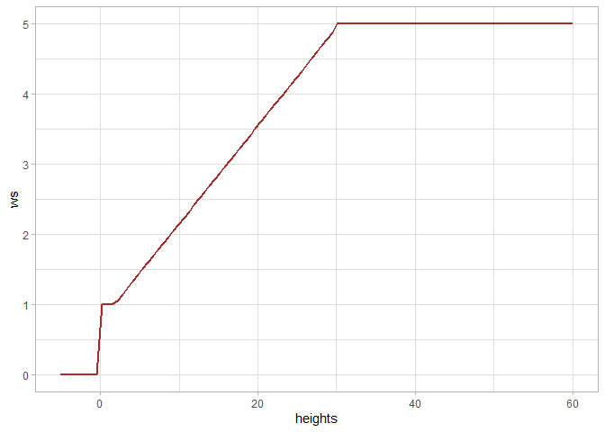
Custom ITD window size functions
Let’s work through how to test some custom window size functions. We’ll test a constant window size of 3 m and a custom function where the windows size is linearly related to the point height
# a constant window size has to be defined as:
## rep(constant, times = length(x))
## x*0 + constant
my_constant <- function(x){
return( rep(3, times = length(x)) ) ## will always return 3
}
# a custom linear function
my_linear <- function(x) {(x * 0.1) + 3}
# let's put these in a list to test with the best default function we saved from above
my_fn_list <- list(
my_constant = my_constant
, my_linear = my_linear
, best_default_ws = best_ws
)run itd_tuning() with our custom window size definitions and try on two sample plots of 0.1 ha
# run it with custom functions
itd_tuning_ans2 <- itd_tuning(
input_las_dir = i
, ws_fn_list = my_fn_list
, n_samples = 2
)let’s check out that tuning plot
# look at the tuning plot
itd_tuning_ans2$plot_samples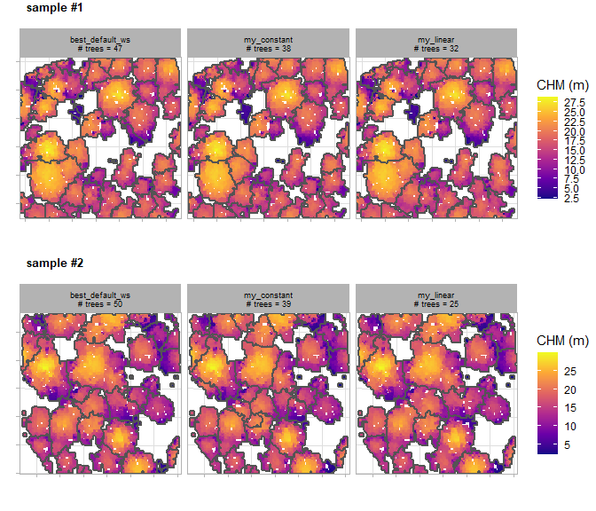
we can also check out what our custom “my_linear” function looks like
ggplot2::ggplot() +
ggplot2::geom_function(
fun = itd_tuning_ans2$ws_fn_list$my_linear
, color = "gold"
, lwd = 1
) +
ggplot2::xlim(-5,60) +
ggplot2::ylim(-0.5,NA) +
ggplot2::labs(x = "heights", y = "ws", color = "") +
ggplot2::theme_light()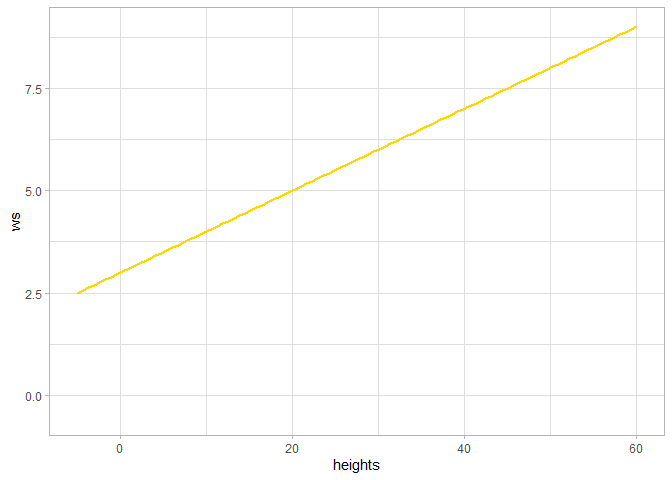
Extract Trees from Point Cloud: Custom
We’ll continue to use the MixedConifer.laz that ships with the lidR package for our example.
Customizing the cloud2trees() function parameters we’ll:
- Change the resolution of the DTM using
dtm_res_m - Change moving window used to detect the local maxima tree tops using
wswith our best window size from ouritd_tuning()exploration above - Estimate tree DBH using allometry from FIA plot data with
estimate_tree_dbh - Extract tree FIA Forest Type Group with
estimate_tree_type - Quantify tree competition metrics with
estimate_tree_competition - Extract tree CBH from the point cloud with
estimate_tree_cbhfor a sample of 555 trees usingcbh_tree_sample_n - Model the remaining tree CBH values with
cbh_estimate_missing_cbhbased on our sample of 555 trees - Extract tree height to maximum crown diameter (HMD) from the point cloud with
estimate_tree_hmdfor a sample of 50% trees usinghmd_tree_sample_prop - Model the remaining tree HMD values with
hmd_estimate_missing_hmdbased on our sample - Estimate tree crown biomass using the LANDFIRE CBD product with
estimate_biomass_method
# make sure we know where the results are going
my_dir <- tempdir()
# run it
cloud2trees_ans_c <- cloud2trees::cloud2trees(
output_dir = my_dir
, input_las_dir = i
, dtm_res_m = 0.5
, ws = best_ws
, estimate_tree_dbh = TRUE
, estimate_tree_type = TRUE
, estimate_tree_competition = TRUE
, estimate_tree_cbh = TRUE
, cbh_tree_sample_n = 555
, cbh_estimate_missing_cbh = TRUE
, estimate_tree_hmd = TRUE
, hmd_tree_sample_prop = 0.5
, hmd_estimate_missing_hmd = TRUE
, estimate_biomass_method = "landfire"
)Check how the digital terrain model (DTM) raster has changed
paste(
"Default DTM resolution:"
, cloud2trees_ans$dtm_rast %>% terra::res() %>% paste(collapse = ",")
, "|| Custom DTM resolution:"
, cloud2trees_ans_c$dtm_rast %>% terra::res() %>% paste(collapse = ",")
)
#> [1] "Default DTM resolution: 1,1 || Custom DTM resolution: 0.5,0.5"Check that our spatial data frame with tree crown polygons has data on DBH (dbh_*), CBH (tree_cbh_m), HMD (max_crown_diam_height_m), forest_type_*, competition (comp_*), and crown biomass using the LANDFIRE data (landfire_*).
cloud2trees_ans_c$crowns_sf %>% dplyr::glimpse()
#> Rows: 343
#> Columns: 34
#> $ treeID <chr> "1_481281.4_3813010.9", "2_481294.4_3813010.…
#> $ tree_height_m <dbl> 22.23, 15.85, 10.06, 13.44, 22.07, 22.48, 22…
#> $ tree_x <dbl> 481281.4, 481294.4, 481306.4, 481312.9, 4813…
#> $ tree_y <dbl> 3813011, 3813011, 3813011, 3813011, 3813011,…
#> $ crown_area_m2 <dbl> 10.3750, 10.8125, 1.1875, 4.5625, 6.3750, 10…
#> $ geometry <GEOMETRY [m]> MULTIPOLYGON (((481280.5 38..., POL…
#> $ fia_est_dbh_cm <dbl> 49.489231, 31.309071, 17.135796, 24.843153, …
#> $ fia_est_dbh_cm_lower <dbl> 27.746832, 17.725274, 9.644044, 14.225778, 2…
#> $ fia_est_dbh_cm_upper <dbl> 75.479259, 48.115126, 26.246084, 38.082835, …
#> $ dbh_cm <dbl> 49.489231, 31.309071, 17.135796, 24.843153, …
#> $ is_training_data <lgl> FALSE, FALSE, FALSE, FALSE, FALSE, FALSE, FA…
#> $ dbh_m <dbl> 0.49489231, 0.31309071, 0.17135796, 0.248431…
#> $ radius_m <dbl> 0.24744616, 0.15654536, 0.08567898, 0.124215…
#> $ basal_area_m2 <dbl> 0.192358462, 0.076989280, 0.023062080, 0.048…
#> $ basal_area_ft2 <dbl> 2.07054648, 0.82871261, 0.24824023, 0.521767…
#> $ ptcld_extracted_dbh_cm <dbl> NA, NA, NA, NA, NA, NA, NA, NA, NA, NA, NA, …
#> $ ptcld_predicted_dbh_cm <dbl> NA, NA, NA, NA, NA, NA, NA, NA, NA, NA, NA, …
#> $ tree_cbh_m <dbl> 15.500000, 8.500000, 7.012133, 11.720800, 20…
#> $ is_training_cbh <lgl> TRUE, TRUE, FALSE, FALSE, TRUE, TRUE, TRUE, …
#> $ forest_type_group_code <chr> "220", "220", "220", "220", "220", "220", "2…
#> $ forest_type_group <chr> "Ponderosa pine group", "Ponderosa pine grou…
#> $ hardwood_softwood <chr> "Softwood", "Softwood", "Softwood", "Softwoo…
#> $ comp_trees_per_ha <dbl> 495.0296, 742.5445, 742.5445, 990.0593, 742.…
#> $ comp_relative_tree_height <dbl> 0.9099468, 1.0000000, 0.5804963, 1.0000000, …
#> $ comp_dist_to_nearest_m <dbl> 3.010399, 2.549510, 1.677051, 1.414214, 3.60…
#> $ max_crown_diam_height_m <dbl> 10.644080, 10.660000, 6.370394, 10.096082, 1…
#> $ is_training_hmd <lgl> FALSE, TRUE, FALSE, FALSE, TRUE, FALSE, FALS…
#> $ landfire_stand_id <dbl> 49, 50, 50, 50, 51, 51, 51, 49, 50, 50, 51, …
#> $ crown_dia_m <dbl> 3.6345371, 3.7103777, 1.2296227, 2.4102190, …
#> $ crown_length_m <dbl> 6.7299995, 7.3500004, 3.0478671, 1.7191996, …
#> $ crown_volume_m3 <dbl> 46.5491635, 52.9812527, 2.4128948, 5.2292321…
#> $ landfire_tree_kg_per_m3 <dbl> 0.2167401, 0.1645076, 0.1645076, 0.1645076, …
#> $ landfire_stand_kg_per_m3 <dbl> 0.08, 0.08, 0.08, 0.08, 0.08, 0.08, 0.08, 0.…
#> $ landfire_crown_biomass_kg <dbl> 10.08907036, 8.71581875, 0.39693953, 0.86024…Remember, we also changed the ws parameter used to detect the local maxima for identifying tree tops so we got a few more trees compared to the default settings.
paste(
"Default trees extracted:"
, cloud2trees_ans$crowns_sf %>% nrow()
, "|| Custom trees extracted:"
, cloud2trees_ans_c$crowns_sf %>% nrow()
)
#> [1] "Default trees extracted: 340 || Custom trees extracted: 343"Let’s look at the relationship between tree height and tree DBH estimated from the FIA plot data.
cloud2trees_ans_c$crowns_sf %>%
ggplot2::ggplot(mapping = ggplot2::aes(x = tree_height_m, y = dbh_cm)) +
ggplot2::geom_point(color = "navy", alpha = 0.6) +
ggplot2::labs(x = "tree ht. (m)", y = "tree DBH (cm)") +
ggplot2::scale_x_continuous(limits = c(0,NA)) +
ggplot2::scale_y_continuous(limits = c(0,NA)) +
ggplot2::theme_light()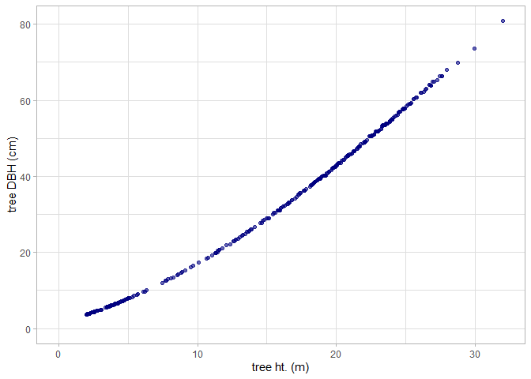
Let’s look at the relationship between tree height and tree CBH as extracted from the point cloud. Note, that we do not expect a perfect linear relationship between tree height and CBH throughout the entire height range because CBH is also determined spatially (e.g. as a fire moves through a stand).
cloud2trees_ans_c$crowns_sf %>%
dplyr::arrange(is_training_cbh) %>%
ggplot2::ggplot(mapping = ggplot2::aes(x = tree_height_m, y = tree_cbh_m, color=is_training_cbh)) +
ggplot2::geom_point() +
ggplot2::labs(x = "tree ht. (m)", y = "tree CBH (m)") +
ggplot2::scale_y_continuous(breaks = scales::extended_breaks(n=12)) +
ggplot2::scale_x_continuous(breaks = scales::extended_breaks(n=14)) +
ggplot2::scale_color_viridis_d(alpha = 0.8, name = "is CBH\nfrom cloud?") +
ggplot2::theme_light()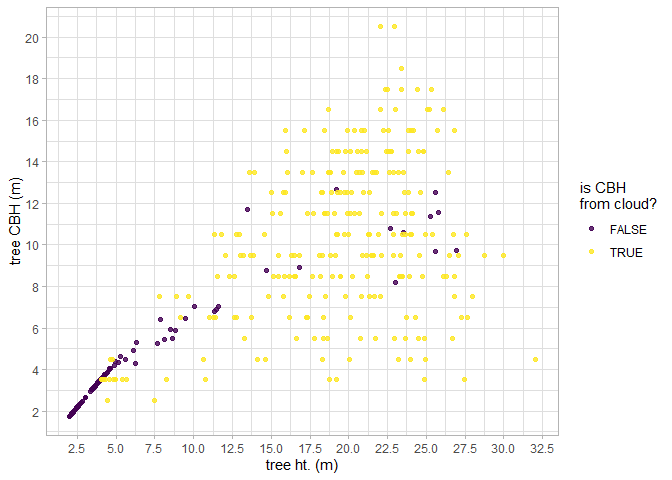
We can also plot height, diameter, and CBH of trees spatially and we’ll use the patchwork package to combine our plots.
library(patchwork)
# height plot
plt_ht <-
cloud2trees_ans_c$crowns_sf %>%
ggplot2::ggplot(mapping = ggplot2::aes(fill = tree_height_m)) +
ggplot2::geom_sf() +
ggplot2::scale_fill_distiller(palette = "Oranges", name = "tree ht. (m)", direction = 1) +
ggplot2::theme_void() +
ggplot2::theme(legend.position = "top", legend.direction = "horizontal")
# diameter plot
plt_dbh <-
cloud2trees_ans_c$crowns_sf %>%
ggplot2::ggplot(mapping = ggplot2::aes(fill = dbh_cm)) +
ggplot2::geom_sf() +
ggplot2::scale_fill_distiller(palette = "Purples", name = "tree DBH (cm)", direction = 1) +
ggplot2::theme_void() +
ggplot2::theme(legend.position = "top", legend.direction = "horizontal")
# CBH plot
plt_cbh <-
cloud2trees_ans_c$crowns_sf %>%
ggplot2::ggplot(mapping = ggplot2::aes(fill = tree_cbh_m)) +
ggplot2::geom_sf() +
ggplot2::scale_fill_distiller(palette = "Greens", name = "tree CBH (m)", direction = 1) +
ggplot2::theme_void() +
ggplot2::theme(legend.position = "top", legend.direction = "horizontal")
# combine with patchwork
plt_ht + plt_dbh + plt_cbh + patchwork::plot_layout(ncol = 2) &
ggplot2::theme(
legend.title = ggplot2::element_text(size = 8)
, legend.text = ggplot2::element_text(size = 7)
)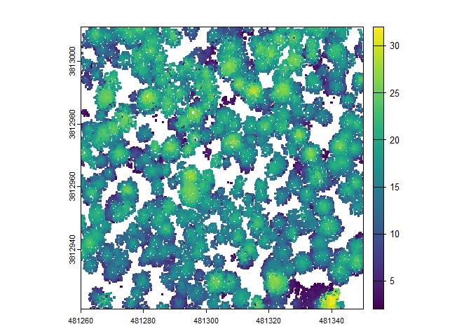
Let’s plot the distance to the nearest tree that we obtained by turning on the estimate_tree_competition parameter in the cloud2trees() function call to quantify tree competition metrics. We’ll use the spatial tree points data in cloud2trees_ans_c$treetops_sf.
cloud2trees_ans_c$treetops_sf %>%
ggplot2::ggplot(mapping = ggplot2::aes(color = comp_dist_to_nearest_m)) +
ggplot2::geom_sf() +
ggplot2::scale_color_distiller(palette = "Greys", name = "distance to\nnearest tree", direction = 1) +
ggplot2::theme_void() +
ggplot2::theme(legend.position = "top", legend.direction = "horizontal")
Let’s look at the FIA Forest Type Group data we extracted for the tree list.
cloud2trees_ans_c$treetops_sf %>%
sf::st_drop_geometry() %>%
dplyr::count(forest_type_group_code, forest_type_group)
#> # A tibble: 1 × 3
#> forest_type_group_code forest_type_group n
#> <chr> <chr> <int>
#> 1 220 Ponderosa pine group 343
cloud2trees() outputs
The cloud2trees() process generates a list of outputs which are written to the disk in a delivery directory titled point_cloud_processing_delivery in the output_dir argument defined by the user in the function call.
The astute reader will have noticed that we saved our outputs to a temporary directory (my_dir) but this could have been any directory on our local machine (e.g. “C:”). Let’s check out the files that were delivered in the point_cloud_processing_delivery folder.
# append the "point_cloud_processing_delivery" to our output_dir
cloud2trees_delivery_dir <- file.path(my_dir,"point_cloud_processing_delivery")
# which files?
list.files( cloud2trees_delivery_dir )
#> [1] "cbh_height_model_estimates.rds"
#> [2] "chm_0.25m.tif"
#> [3] "dtm_0.5m.tif"
#> [4] "fia_foresttype_raster.tif"
#> [5] "final_detected_crowns.gpkg"
#> [6] "final_detected_tree_tops.gpkg"
#> [7] "hmd_height_model_estimates.rds"
#> [8] "norm_las"
#> [9] "processed_tracking_data.csv"
#> [10] "raw_las_ctg_info.gpkg"
#> [11] "regional_dbh_height_model.rds"
#> [12] "regional_dbh_height_model_estimates.csv"
#> [13] "regional_dbh_height_model_predictions.csv"
#> [14] "regional_dbh_height_model_training_data.csv"
#> [15] "stand_cell_data_landfire.csv"here is a description of each of those files:
| File Name | File Type | Description |
|---|---|---|
| cbh_height_model_estimates.rds | R Data Serialization | saved R object of random forest model predicting tree crown base height |
| chm_0.25m_tif | GeoTif | canopy height model derived at user-defined resolution |
| dtm_1m.tif | GeoTif | digital terrain model derived at user-defined resolution |
| fia_foresttype_raster.tif | GeoTif | 30 m resolution raster of predicted forest type |
| final_detected_crowns.gpkg | Geopackage | polygons of individual tree crowns with appended tree level attributes |
| final_detected_tree_tops.gpkg | Geopackage | tree top point locations of individual trees with appended tree level attributes |
| hmd_height_model_estimates.rds | R Data Serialization | saved R object of random forest model predicting tree height to max crown diameter |
| processed_tracking_data.csv | CSV | summary table of data processing time for each step from DTM/CHM generation through modeling tree parameters |
| raw_las_ctg_info.gpkg | Geopackage | polygon of point cloud tiles tiles used in data processing |
| regional_dbh_height_model.rds | R Data Serialization | saved R object of polynomial regression to predict tree diameter at breast height |
| regional_dbh_height_model_estimates.csv | CSV | table of predicted coefficient values of polynomial regression to predict tree diameter at breast height |
| regional_dbh_height_model_predictions.csv | CSV | predicted diameter at breast height from polynomial regression at 0.1 m height increments |
| regional_dbh_height_model_training_data.csv | CSV | table of TreeMap tree data used to train diameter at breast height prediction model |
| stand_cell_data_landfire.csv | CSV | table of parameters used to convert LANDFIRE CBD to tree-level crown bulk density |
Format cloud2trees() output for LANL TREES
We developed the cloud2trees_to_lanl_trees() function to use the output from cloud2trees() to generate inputs for the LANL TREES program as a pathway to fire modeling with Quic-Fire
If you want to use the cloud2trees() framework to generate all of the required fire modeling input variables, the minimum required settings are:
cloud2trees::cloud2trees(
...
, estimate_tree_dbh = TRUE
, estimate_tree_type = TRUE
, estimate_tree_cbh = TRUE
, cbh_estimate_missing_cbh = TRUE
, estimate_tree_hmd = TRUE
, hmd_estimate_missing_hmd = TRUE
, estimate_biomass_method = "landfire" # or "cruz" or both c("landfire","cruz")
)The primary input of cloud2trees_to_lanl_trees() is a directory with outputs from cloud2trees(). As a reminder, the default directory written by cloud2trees() is point_cloud_processing_delivery. Also required is a spatial file defining the boundary of our area of interest.
We’ll pretend our area of interest is the central 2,000 m2 of our point cloud data
my_aoi <-
cloud2trees_ans_c$treetops_sf %>%
sf::st_union() %>%
sf::st_centroid() %>%
sf::st_buffer(sqrt(2000)/2, endCapStyle = "SQUARE")
# what is this?
my_aoi %>% dplyr::glimpse()
#> sfc_POLYGON of length 1; first list element: List of 1
#> $ : num [1:5, 1:2] 481328 481328 481283 481283 481328 ...
#> - attr(*, "class")= chr [1:3] "XY" "POLYGON" "sfg"Now, we’ll call the function and tell it where our cloud2trees() outputs are located and what our study area is. We’ll also tell it just to write the inputs for the LANL TREES program to the same directory and the program will automatically create a new folder titled lanl_trees_delivery
# run it with no customization
cloud2trees_to_lanl_trees(
input_dir = cloud2trees_delivery_dir
, study_boundary = my_aoi
, output_dir = cloud2trees_delivery_dir
)Let’s check out the files that were delivered in the lanl_trees_delivery folder.
# append the "lanl_trees_delivery" to our cloud2trees_delivery_dir
lanl_trees_delivery_dir <- file.path(cloud2trees_delivery_dir,"lanl_trees_delivery")
# which files?
list.files( lanl_trees_delivery_dir )
#> [1] "Cloud2Trees_TreeList.txt" "dtm_Clipped.tif"
#> [3] "fuellist" "Lidar_Bounds.geojson"
#> [5] "topo.dat"here is a description of each of those files:
| File Name | File Type | Description |
|---|---|---|
| Cloud2Trees_TreeList.txt | text | tree list with formatted spacing containing tree parameters necessary for input to the LANL TREES program |
| dtm_Clipped.tif | GeoTif | digital terrain model clipped to a rectangular extent and scaled to 2 m resolution for use in LANL TREES program |
| fuellist | raw | file describing treelist file and surface fuel litter and herbaceous bulk density, depth, surface area to volume, and moisture as user defined constants for use in the LANL TREES program |
| Lidar_Bounds.geojson | Geographic JavaScript Object Notation | projected polygon delineating the data and simulation extent |
| topo.dat | DAT | digital terrain model elevation data stored in FORTRAN format for use in LANL TREES program |
Define surface fuel
The current iteration of cloud2trees_to_lanl_trees() requires the user to specify surface fuel load parameters, such as litter and herbaceous/grass fuel loads, which are assumed constant across the study area. Surface fuel loading parameters should be determined through a literature review or expert opinion.
The fuel_litter argument of the cloud2trees_to_lanl_trees() function allows users to define the litter fuel load with the parameters in order:
- ilitter : 0 = no litter, 1 = litter
- lrho : litter bulk density (kg/m3)
- lmoisture: litter moisture (percent on 0-1 scale)
- lss : litter sizescale (m)
- ldepth : litter depth (m)
The fuel_grass argument of the cloud2trees_to_lanl_trees() function allows users to define the grass/herbaceous fuel load with the parameters in order:
- igrass : 0 = no grass, 1 = grass
- grho : grass bulk density (kg/m3)
- gmoisture : grass moisture (percent on 0-1 scale)
- gss : grass sizescale (m)
- gdepth : grass depth (m)
here is what customizing these fuel loads would look like in the cloud2trees_to_lanl_trees() call
# fuel_litter
my_fuel_litter <- list(
ilitter = 1
, lrho = 13.44
, lmoisture = 0.09
, lss = 0.00041
, ldepth = 0.032
)
# fuel_grass
my_fuel_grass <- list(
igrass = 1
, grho = 0.0065
, gmoisture = 0.3
, gss = 0.00033
, gdepth = 0.15
)
# run it with all customization
cloud2trees_to_lanl_trees(
input_dir = cloud2trees_delivery_dir
, study_boundary = my_aoi
, output_dir = cloud2trees_delivery_dir
, topofile = "flat"
, fuel_litter = my_fuel_litter
, fuel_grass = my_fuel_grass
)Extract Raster Data from Point Cloud
We can use the cloud2raster() function if we only want to create a DTM and CHM from our point cloud data. This function also creates a classified and height normalized point cloud in the process. If you wish to keep these point clouds, ensure to turn on the keep_intrmdt parameter and see the point_cloud_processing_temp directory nested in the output_dir.
cloud2raster_ans <- cloud2trees::cloud2raster(output_dir = tempdir(), input_las_dir = i)There is a digital terrain model (DTM) raster which we can plot using terra::plot()
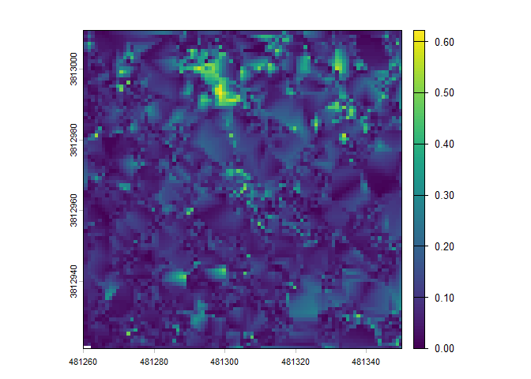
There is a canopy height model (CHM) raster which we can plot using terra::plot()

Extract Trees from Raster Data
We can use the raster2trees() function if we already have a CHM raster and want to extract a tree list.
We’ll use the CHM example that ships with the cloud2trees package.
# read example CHM raster
f <- paste0(system.file(package = "cloud2trees"),"/extdata/chm.tif")
r <- terra::rast(f)
# extract trees from raster
raster2trees_ans <- cloud2trees::raster2trees(chm_rast = r, outfolder = tempdir())A spatial data frame with tree crown polygons is returned.
# there are tree crowns
raster2trees_ans %>% dplyr::glimpse()
#> Rows: 147
#> Columns: 6
#> $ treeID <chr> "1_458054.1_4450092.9", "2_458055.9_4450092.9", "3_45807…
#> $ tree_height_m <dbl> 4.599, 5.130, 4.610, 8.957, 10.310, 3.023, 4.271, 5.653,…
#> $ tree_x <dbl> 458054.1, 458055.9, 458078.4, 458067.6, 458044.9, 458077…
#> $ tree_y <dbl> 4450093, 4450093, 4450093, 4450092, 4450092, 4450092, 44…
#> $ crown_area_m2 <dbl> 0.5625, 0.3750, 0.6250, 3.2500, 5.0000, 0.3750, 0.9375, …
#> $ geometry <GEOMETRY [m]> POLYGON ((458054 4450093, 4..., POLYGON ((45805…Let’s plot these tree crown polygons using ggplot2::ggplot() with some custom plot settings.
raster2trees_ans %>%
ggplot2::ggplot(mapping = ggplot2::aes(fill = tree_height_m)) +
ggplot2::geom_sf() +
ggplot2::scale_fill_distiller(palette = "Oranges", name = "tree ht. (m)", direction = 1) +
ggplot2::theme_void() +
ggplot2::theme(legend.position = "top", legend.direction = "horizontal")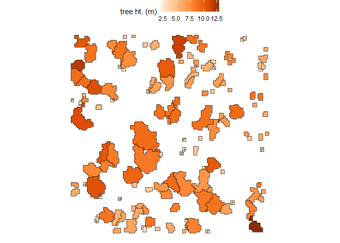
Estimate Tree DBH for a Tree List
If we already have a list of trees with tree coordinate and tree height data, we can estimate tree DBH using a site-specific allometric equation based on FIA data with the trees_dbh() function.
We just need to pass a data frame with the columns treeID, tree_x, tree_y, and tree_height_m to the trees_dbh() function.
set.seed(111)
# a fake tree list
tl <- dplyr::tibble(
treeID = c(1:21)
, tree_x = rnorm(n=21, mean = 458064, sd = 11)
, tree_y = rnorm(n=21, mean = 4450074, sd = 11)
, tree_height_m = exp(rgamma(n = 21, shape = (7/4)^2, rate = (4^2)/7))
)Use the trees_dbh() function to estimate DBH based on tree height and tree location.
# call the function
tl_dbh <- cloud2trees::trees_dbh(tree_list = tl, crs = "32613")What is this data?
tl_dbh %>% dplyr::glimpse()
#> Rows: 21
#> Columns: 16
#> $ treeID <chr> "1", "2", "3", "4", "5", "6", "7", "8", "9", "1…
#> $ tree_x <dbl> 458066.6, 458060.4, 458060.6, 458038.7, 458062.…
#> $ tree_y <dbl> 4450078, 4450076, 4450072, 4450078, 4450081, 44…
#> $ tree_height_m <dbl> 1.447969, 4.970239, 3.549897, 7.216735, 3.54328…
#> $ geometry <POINT [m]> POINT (458066.6 4450078), POINT (458060.4…
#> $ fia_est_dbh_cm <dbl> 3.229841, 8.447579, 6.094372, 12.563307, 6.0943…
#> $ fia_est_dbh_cm_lower <dbl> 1.939234, 5.030607, 3.647726, 7.505863, 3.64772…
#> $ fia_est_dbh_cm_upper <dbl> 4.805320, 12.666605, 9.087239, 18.769135, 9.087…
#> $ dbh_cm <dbl> 3.229841, 8.447579, 6.094372, 12.563307, 6.0943…
#> $ is_training_data <lgl> FALSE, FALSE, FALSE, FALSE, FALSE, FALSE, FALSE…
#> $ dbh_m <dbl> 0.03229841, 0.08447579, 0.06094372, 0.12563307,…
#> $ radius_m <dbl> 0.01614921, 0.04223790, 0.03047186, 0.06281654,…
#> $ basal_area_m2 <dbl> 0.0008193176, 0.0056047266, 0.0029170762, 0.012…
#> $ basal_area_ft2 <dbl> 0.008819135, 0.060329277, 0.031399409, 0.133435…
#> $ ptcld_extracted_dbh_cm <dbl> NA, NA, NA, NA, NA, NA, NA, NA, NA, NA, NA, NA,…
#> $ ptcld_predicted_dbh_cm <dbl> NA, NA, NA, NA, NA, NA, NA, NA, NA, NA, NA, NA,…Let’s look at the relationship between tree height and tree DBH estimated from the FIA plot data.
tl_dbh %>%
ggplot2::ggplot(mapping = ggplot2::aes(x = tree_height_m, y = dbh_cm)) +
ggplot2::geom_point(color = "navy", alpha = 0.6) +
ggplot2::labs(x = "tree ht. (m)", y = "tree DBH (cm)") +
ggplot2::scale_x_continuous(limits = c(0,NA)) +
ggplot2::scale_y_continuous(limits = c(0,NA)) +
ggplot2::theme_light()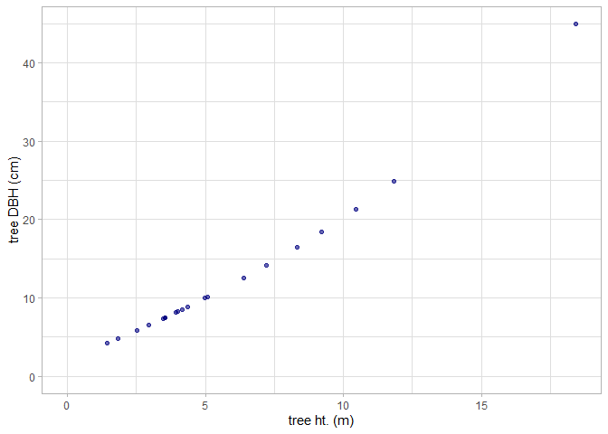
We can look at this data spatially too.
# height plot
plt_ht2 <-
tl_dbh %>%
ggplot2::ggplot(mapping = ggplot2::aes(color = tree_height_m)) +
ggplot2::geom_sf(size = 3) +
ggplot2::scale_color_distiller(palette = "Oranges", name = "tree ht. (m)", direction = 1) +
ggplot2::theme_void() +
ggplot2::theme(
legend.position = "top", legend.direction = "horizontal"
, panel.border = ggplot2::element_rect(color = "black", fill = NA)
)
# diameter plot
plt_dbh2 <-
tl_dbh %>%
ggplot2::ggplot(mapping = ggplot2::aes(color = dbh_cm)) +
ggplot2::geom_sf(size = 3) +
ggplot2::scale_color_distiller(palette = "Purples", name = "tree DBH (cm)", direction = 1) +
ggplot2::theme_void() +
ggplot2::theme(
legend.position = "top", legend.direction = "horizontal"
, panel.border = ggplot2::element_rect(color = "black", fill = NA)
)
# combine with patchwork
plt_ht2 + plt_dbh2
Estimate Tree Forest Type for a Tree List
If we already have a list of trees with tree coordinate, we can use the trees_type() function attach the tree forest type based on the spatial overlap with the Forest Type Groups of the Continental United States data (Wilson 2023). This forest type group layer was developed using data from over 213,000 national forest inventory plots measured during the period 2014-2018 from the FIA program at 30-meter resolution covering the forested extent of the continental US.
We just need to pass a data frame with the columns treeID, tree_x, tree_y to the trees_type() function. We can also use an sf class object with POINT or POLYGON geometry (see sf::st_geometry_type()) and the program will use the data “as-is” and only require the treeID column.
# a fake tree list
tl <- dplyr::tibble(
treeID = c(1:66)
, tree_x = rnorm(n=66, mean = 458000, sd = 75)
, tree_y = rnorm(n=66, mean = 4450000, sd = 75)
)Use the trees_type() function to extract the FIA forest type group based on tree location. If a tree overlaps with an area that is classified as “non-forest”, the program will search for the nearest forest type to impute a value; we’ll limit the search radius by setting the max_search_dist_m parameter to 88 meters.
# call the function
tl_type <- cloud2trees::trees_type(tree_list = tl, crs = "32613", max_search_dist_m = 88)The return includes our tree list with forest type data (tree_list) as well as the FIA Forest Types Group raster (foresttype_rast) of the area we searched.
What is in the tree list data?
tl_type$tree_list %>% dplyr::glimpse()
#> Rows: 66
#> Columns: 7
#> $ treeID <chr> "1", "2", "3", "4", "5", "6", "7", "8", "9", "1…
#> $ tree_x <dbl> 457980.9, 457941.7, 457902.6, 457927.3, 457916.…
#> $ tree_y <dbl> 4449951, 4450079, 4449905, 4449872, 4450004, 44…
#> $ geometry <POINT [m]> POINT (457980.9 4449951), POINT (457941.7…
#> $ forest_type_group_code <chr> "200", "200", "200", "220", "200", "200", "260"…
#> $ forest_type_group <chr> "Douglas-fir group", "Douglas-fir group", "Doug…
#> $ hardwood_softwood <chr> "Softwood", "Softwood", "Softwood", "Softwood",…Let’s look at the FIA Forest Type Group data we extracted for the tree list.
tl_type$tree_list %>%
sf::st_drop_geometry() %>%
dplyr::count(forest_type_group_code, forest_type_group)
#> # A tibble: 4 × 3
#> forest_type_group_code forest_type_group n
#> <chr> <chr> <int>
#> 1 200 Douglas-fir group 39
#> 2 220 Ponderosa pine group 4
#> 3 260 Fir / spruce / mountain hemlock group 4
#> 4 280 Lodgepole pine group 19We can plot our spatial tree list
# now plot
tl_type$tree_list %>%
ggplot2::ggplot() +
ggplot2::geom_sf(ggplot2::aes(color=forest_type_group), size = 3) +
ggplot2::labs(color = "FIA forest\ntype group") +
ggplot2::scale_color_brewer(palette = "Dark2") +
ggplot2::theme_void() +
ggplot2::theme(panel.border = ggplot2::element_rect(color = "black", fill = NA))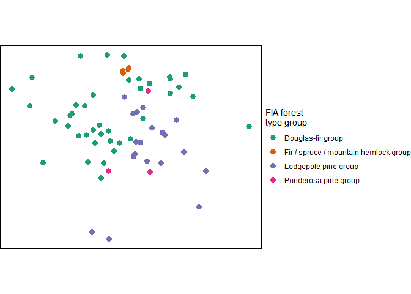
Let’s check out the FIA Forest Types Group raster (foresttype_rast) of the area we searched
r_plt <-
tl_type$foresttype_rast %>%
as.data.frame(xy=T) %>%
dplyr::rename(f = 3) %>%
dplyr::mutate(f = as.factor(f)) %>%
ggplot2::ggplot() +
ggplot2::geom_tile(mapping = ggplot2::aes(x=x, y=y, fill = f)) +
ggplot2::labs(fill = "FIA forest type\ngroup code") +
ggplot2::scale_fill_viridis_d(option = "turbo", alpha = 0.9) +
ggplot2::theme_void()
r_plt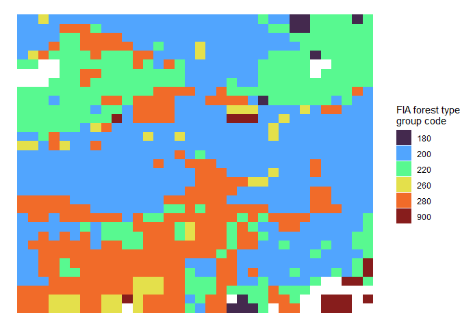
See the Forest Type Groups of the Continental United States data (Wilson 2023) for a list of possible forest type group codes
Let’s overlay our tree points on the raster data
r_plt +
ggplot2::geom_sf(
data = tl_type$tree_list %>%
# we have to reproject
sf::st_transform(
crs = tl_type$foresttype_rast %>%
terra::crs(describe=T) %>%
dplyr::pull(code) %>%
as.numeric() %>%
sf::st_crs()
)
, mapping = ggplot2::aes(shape = forest_type_group)
, color = "white"
, size = 2
) +
ggplot2::labs(shape = "FIA forest\ntype group") +
ggplot2::guides(shape = ggplot2::guide_legend(override.aes = list(size = 3, color = "black")))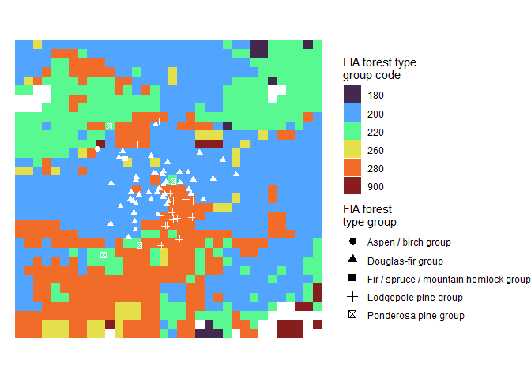
Estimate Tree CBH for a Tree List
If you wish to estimate crown base height (CBH) as part of the point cloud processing the LadderFuelsR package (https://github.com/olgaviedma/LadderFuelsR) and leafR package (https://github.com/DRAAlmeida/leafR) must be manually installed first.
# install.packages("remotes")
## install LadderFuelsR
remotes::install_github(repo = "olgaviedma/LadderFuelsR", upgrade = F)
## install leafR
remotes::install_github(repo = "DRAAlmeida/leafR", upgrade = F)After installing these packages, if we already have spatial polygons of tree crowns and height normalized point cloud data, we can attempt to extract tree CBH from the point cloud using the trees_cbh() function.
We just need to pass a sf class object with POLYGON geometry and the columns treeID and tree_height_m and the height normalized point cloud data to the trees_cbh() function.
We’ll use the tree crown polygons and normalized point cloud data examples that ship with the cloud2trees package. We will turn on the force_same_crs parameter to force the same projection between the point cloud and polygon since we are confident that data were generated with the same projection. Data generated by a cloud2trees pipeline (e.g. cloud2raster()) will always have the same projection.
# read example crown polygons
f <- system.file(package = "cloud2trees","extdata", "crowns_poly.gpkg")
p <- sf::st_read(f, quiet = T)
# path to the normalized point cloud data
nlas <- system.file(package = "cloud2trees","extdata","norm_las")
# call the function
trees_cbh_ans <- cloud2trees::trees_cbh(
trees_poly = p
, norm_las = nlas
, tree_sample_prop = 0.77
, estimate_missing_cbh = TRUE
)What is this data?
trees_cbh_ans %>%
dplyr::select(treeID, tree_height_m, tree_cbh_m, is_training_cbh) %>%
dplyr::glimpse()
#> Rows: 196
#> Columns: 5
#> $ treeID <chr> "1_458054.1_4450092.9", "2_458055.9_4450092.9", "3_458…
#> $ tree_height_m <dbl> 4.599, 5.130, 10.641, 4.610, 4.599, 8.957, 10.310, 4.6…
#> $ tree_cbh_m <dbl> 4.102961, 4.500000, 8.500000, 2.500000, 4.500000, 4.76…
#> $ is_training_cbh <lgl> FALSE, TRUE, TRUE, TRUE, TRUE, FALSE, TRUE, FALSE, FAL…
#> $ geom <MULTIPOLYGON [m]> MULTIPOLYGON (((458054 4450..., MULTIPOLY…Let’s look at the relationship between tree height and tree CBH as extracted from the point cloud. Note, that we do not expect a perfect linear relationship between tree height and CBH throughout the entire height range because CBH is also determined spatially (e.g. as a fire moves through a stand).
trees_cbh_ans %>%
dplyr::arrange(is_training_cbh) %>%
ggplot2::ggplot(mapping = ggplot2::aes(x = tree_height_m, y = tree_cbh_m, color=is_training_cbh)) +
ggplot2::geom_point() +
ggplot2::labs(x = "tree ht. (m)", y = "tree CBH (m)") +
ggplot2::scale_y_continuous(breaks = scales::extended_breaks(n=12)) +
ggplot2::scale_x_continuous(breaks = scales::extended_breaks(n=14)) +
ggplot2::scale_color_viridis_d(alpha = 0.8, name = "is CBH\nfrom cloud?") +
ggplot2::theme_light()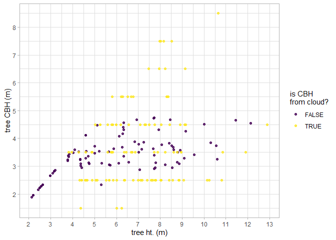
We can look at this data spatially too.
trees_cbh_ans %>%
dplyr::arrange(is_training_cbh) %>%
ggplot2::ggplot(mapping = ggplot2::aes(fill = tree_cbh_m, color=is_training_cbh)) +
ggplot2::geom_sf() +
ggplot2::scale_color_viridis_d(alpha = 0.8, name = "is CBH\nfrom cloud?") +
ggplot2::scale_fill_distiller(palette = "Greens", name = "tree CBH (m)", direction = 1) +
ggplot2::theme_void() +
ggplot2::theme(
legend.position = "top", legend.direction = "horizontal"
, panel.border = ggplot2::element_rect(color = "black", fill = NA)
) +
ggplot2::guides(
color = ggplot2::guide_legend(override.aes = list(lwd = 3, fill = NA))
)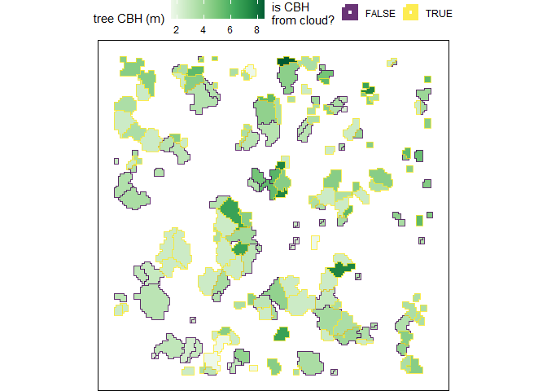
Estimate Tree HMD for a Tree List
If you wish to extract the height of the maximum crown diameter (HMD) using height normalized point cloud data (e.g. as exported by cloud2raster()) the trees_hmd() function and the estimate_tree_hmd in the cloud2trees() function may be relevant to your interests.
We just need to pass a sf class object with POLYGON geometry and the columns treeID and tree_height_m and the height normalized point cloud data to the trees_hmd() function. The function returns the data with the added columns: max_crown_diam_height_m, is_training_hmd.
We’ll use the tree crown polygons and normalized point cloud data examples that ship with the cloud2trees package.
# read example crown polygons
f <- system.file(package = "cloud2trees","extdata", "crowns_poly.gpkg")
p <- sf::st_read(f, quiet = T)
# path to the normalized point cloud data
nlas <- paste0(system.file(package = "cloud2trees"),"/extdata/norm_las")
# call the function
trees_hmd_ans <- cloud2trees::trees_hmd(
trees_poly = p
, norm_las = nlas
, estimate_missing_hmd = TRUE
)What is this data?
trees_hmd_ans %>%
dplyr::select(treeID, tree_height_m, max_crown_diam_height_m, is_training_hmd) %>%
dplyr::glimpse()
#> Rows: 196
#> Columns: 5
#> $ treeID <chr> "1_458054.1_4450092.9", "2_458055.9_4450092.9"…
#> $ tree_height_m <dbl> 4.599, 5.130, 10.641, 4.610, 4.599, 8.957, 10.…
#> $ max_crown_diam_height_m <dbl> 3.531745, 4.681000, 8.943000, 3.151000, 3.2190…
#> $ is_training_hmd <lgl> FALSE, TRUE, TRUE, TRUE, TRUE, TRUE, TRUE, TRU…
#> $ geom <MULTIPOLYGON [m]> MULTIPOLYGON (((458054 4450..., M…Let’s look at the relationship between tree height and tree HMD as extracted from the point cloud. Note, that we do not expect a perfect linear relationship between tree height and HMD throughout the entire height range because HMD is also determined spatially (e.g. as a fire moves through a stand).
trees_hmd_ans %>%
dplyr::arrange(is_training_cbh) %>%
ggplot2::ggplot(
mapping = ggplot2::aes(x = tree_height_m, y = max_crown_diam_height_m, color=is_training_hmd)
) +
ggplot2::geom_point() +
ggplot2::labs(x = "tree ht. (m)", y = "tree HMD (m)") +
ggplot2::scale_y_continuous(breaks = scales::extended_breaks(n=12)) +
ggplot2::scale_x_continuous(breaks = scales::extended_breaks(n=14)) +
ggplot2::scale_color_viridis_d(option = "turbo", begin = 0.2, alpha = 0.8, name = "is HMD\nfrom cloud?") +
ggplot2::theme_light()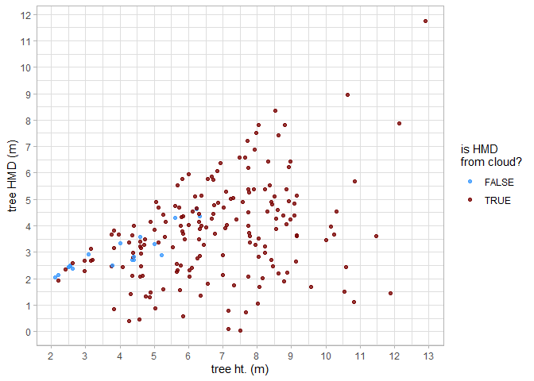
We can look at this data spatially too.
trees_hmd_ans %>%
dplyr::arrange(is_training_hmd) %>%
ggplot2::ggplot(mapping = ggplot2::aes(fill = max_crown_diam_height_m, color=is_training_hmd)) +
ggplot2::geom_sf() +
ggplot2::scale_color_viridis_d(option = "turbo", begin = 0.2, alpha = 0.8, name = "is HMD\nfrom cloud?") +
ggplot2::scale_fill_distiller(palette = "Greys", name = "tree HMD (m)", direction = 1) +
ggplot2::theme_void() +
ggplot2::theme(
legend.position = "top", legend.direction = "horizontal"
, panel.border = ggplot2::element_rect(color = "black", fill = NA)
) +
ggplot2::guides(
color = ggplot2::guide_legend(override.aes = list(lwd = 3, fill = NA))
)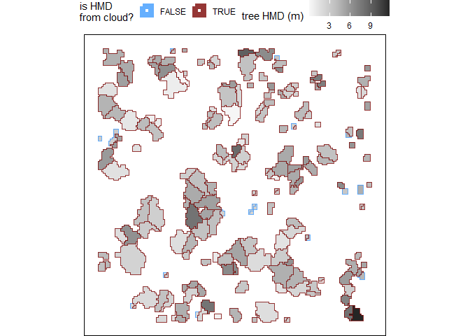
Estimate Tree Biomass for a Tree List
The cloud2trees() package includes methods for estimating individual tree biomass in kilograms, or the component biomass of the tree crown in kilograms.
Currently supported methods for estimating biomass include:
- Tree crown biomass in kilograms:
- “landfire” - based on LANDFIRE’s Forest Canopy Bulk Density (CBD) data (
trees_biomass_landfire()) - “cruz” - based on Cruz et al. (2003) canopy fuel stratum equations (
trees_biomass_cruz())
- “landfire” - based on LANDFIRE’s Forest Canopy Bulk Density (CBD) data (
The trees_biomass() function streamlines the process for estimating individual tree biomass in kilograms, or the component biomass of the tree crown in kilograms. Users can select one, some, or all of the methods available in the package for estimating biomass.
We just need to pass a data frame with the columns treeID, tree_x, tree_y to the trees_biomass*() function. We can also use an sf class object with POINT or POLYGON geometry (see sf::st_geometry_type()) and the program will use the data “as-is” and only require the treeID column.
Since estimating tree crown biomass using stand-based fuel estimates requires back-transformation to the tree level, the trees_biomass_landfire(), trees_biomass_cruz(), and trees_biomass() if using the Cruz or LANDFIRE methods also require the following data attributes:
-
crown_area_m2,tree_height_m(e.g. as exported byraster2trees()) -
tree_cbh_m(e.g. as exported bytrees_cbh()) - and one of
dbh_cm,dbh_m, orbasal_area_m2(e.g. as exported bytrees_dbh())
We’ll use the tree crown polygons that ship with the cloud2trees package.
# read example crown polygons
f <- system.file(package = "cloud2trees","extdata", "crowns_poly.gpkg")
tl <- sf::st_read(f, quiet = T)
trees_biomass()
The trees_biomass() function streamlines the process for estimating individual tree biomass in kilograms, or the component biomass of the tree crown in kilograms. Users can select one, some, or all of the methods available in the package for estimating biomass. The following function calls are equivalent:
# trees_biomass with method = "landfire"
trees_biomass(tree_list, method = "landfire")
# is equivalent to
trees_biomass_landfire(tree_list)We’ll use the trees_biomass() function and ask for both the LANDFIRE and the Cruz et al. (2003) estimates of tree crown biomass in kilograms with the argument method = c("landfire","cruz")
# call trees_biomass and get multiple biomass estimates
trees_biomass_ans <- trees_biomass(tree_list = tl, method = c("landfire","cruz"))what did we get back?
trees_biomass_ans %>% names()
#> [1] "tree_list" "stand_cell_data_landfire"
#> [3] "stand_cell_data_cruz"check out the tree list data
trees_biomass_ans$tree_list %>% dplyr::glimpse()
#> Rows: 196
#> Columns: 36
#> $ treeID <chr> "1_458054.1_4450092.9", "2_458055.9_4450092.…
#> $ tree_height_m <dbl> 4.599, 5.130, 10.641, 4.610, 4.599, 8.957, 1…
#> $ tree_x <dbl> 458054.1, 458055.9, 458064.9, 458078.4, 4580…
#> $ tree_y <dbl> 4450093, 4450093, 4450093, 4450093, 4450092,…
#> $ crown_area_m2 <dbl> 0.1875, 0.3750, 1.8750, 0.7500, 0.3750, 3.37…
#> $ fia_est_dbh_cm <dbl> 7.319132, 8.019020, 19.016688, 7.319132, 7.3…
#> $ fia_est_dbh_cm_lower <dbl> 3.255010, 3.515282, 8.424208, 3.255010, 3.25…
#> $ fia_est_dbh_cm_upper <dbl> 12.58250, 13.93920, 32.91103, 12.58250, 12.5…
#> $ dbh_cm <dbl> 7.319132, 8.019020, 19.016688, 7.319132, 7.3…
#> $ is_training_data <lgl> FALSE, FALSE, FALSE, FALSE, FALSE, FALSE, FA…
#> $ dbh_m <dbl> 0.07319132, 0.08019020, 0.19016688, 0.073191…
#> $ radius_m <dbl> 0.03659566, 0.04009510, 0.09508344, 0.036595…
#> $ basal_area_m2 <dbl> 0.004207353, 0.005050479, 0.028402703, 0.004…
#> $ basal_area_ft2 <dbl> 0.04528795, 0.05436335, 0.30572669, 0.045287…
#> $ ptcld_extracted_dbh_cm <dbl> NA, NA, NA, NA, NA, NA, NA, NA, NA, NA, NA, …
#> $ ptcld_predicted_dbh_cm <dbl> NA, NA, NA, NA, NA, NA, NA, NA, NA, NA, NA, …
#> $ tree_cbh_m <dbl> 2.770816, 2.750028, 1.500000, 1.500000, 2.77…
#> $ is_training_cbh <lgl> FALSE, FALSE, TRUE, TRUE, FALSE, TRUE, TRUE,…
#> $ comp_trees_per_ha <dbl> NA, NA, NA, NA, NA, NA, NA, NA, NA, NA, NA, …
#> $ comp_relative_tree_height <dbl> NA, NA, NA, NA, NA, NA, NA, NA, NA, NA, NA, …
#> $ comp_dist_to_nearest_m <dbl> NA, NA, NA, NA, NA, NA, NA, NA, NA, NA, NA, …
#> $ forest_type_group_code <chr> "200", "200", "200", "200", "200", "200", "2…
#> $ forest_type_group <chr> "Douglas-fir group", "Douglas-fir group", "D…
#> $ hardwood_softwood <chr> "Softwood", "Softwood", "Softwood", "Softwoo…
#> $ cruz_stand_id <dbl> 32, 32, 32, 33, 32, 32, 31, 33, 32, 31, 31, …
#> $ cruz_tree_kg_per_m3 <dbl> 1.0196573, 1.0196573, 1.0196573, 1.8371350, …
#> $ cruz_stand_kg_per_m3 <dbl> 0.017647375, 0.017647375, 0.017647375, 0.003…
#> $ cruz_crown_biomass_kg <dbl> 0.2330152, 0.6066891, 11.6508594, 2.8567451,…
#> $ landfire_stand_id <dbl> 41, 41, 41, 42, 41, 42, 41, 42, 42, 41, 41, …
#> $ crown_dia_m <dbl> 0.4886025, 0.6909883, 1.5450968, 0.9772050, …
#> $ crown_length_m <dbl> 1.8281841, 2.3799726, 9.1409998, 3.1100001, …
#> $ crown_volume_m3 <dbl> 0.2285230, 0.5949931, 11.4262497, 1.5550001,…
#> $ landfire_tree_kg_per_m3 <dbl> 0.5285632, 0.5285632, 0.5285632, 1.1615116, …
#> $ landfire_stand_kg_per_m3 <dbl> 0.11, 0.11, 0.11, 0.08, 0.11, 0.08, 0.11, 0.…
#> $ landfire_crown_biomass_kg <dbl> 0.1207889, 0.3144915, 6.0394953, 1.8061507, …
#> $ geometry <POINT [m]> POINT (458054.1 4450093), POINT (45805…that’s a lot of extra information…the cruz_crown_biomass_kg and landfire_crown_biomass_kg columns include estimates of tree crown biomass in kilograms that we are after
plot tree LANDFIRE and Cruz crown biomass estimate
library(patchwork)
# plot tree landfire crown biomass estimate
p1 <- trees_biomass_ans$tree_list %>%
ggplot2::ggplot(
mapping = ggplot2::aes(
x = tree_height_m
, y = landfire_crown_biomass_kg
, color = crown_area_m2
)
) +
ggplot2::geom_point()
# plot tree cruz crown biomass estimate
p2 <- trees_biomass_ans$tree_list %>%
ggplot2::ggplot(
mapping = ggplot2::aes(
x = tree_height_m
, y = cruz_crown_biomass_kg
, color = crown_area_m2
)
) +
ggplot2::geom_point()
# patchwork it
p1/p2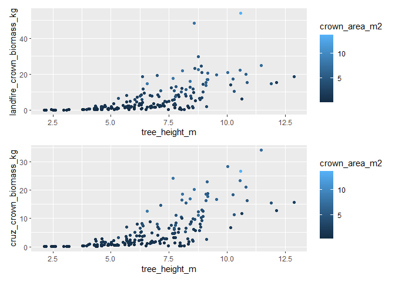
the estimates look similar but not exactly the same. let’s plot them against each other
# get the max for the upper limit scale
ul <- max(
trees_biomass_ans$tree_list$cruz_crown_biomass_kg
, trees_biomass_ans$tree_list$landfire_crown_biomass_kg
)
# plot tree landfire vs. cruz crown biomass estimate
trees_biomass_ans$tree_list %>%
ggplot2::ggplot(
mapping = ggplot2::aes(
x = landfire_crown_biomass_kg, y = cruz_crown_biomass_kg
)
) +
ggplot2::geom_abline(lwd = 1.5) +
ggplot2::geom_smooth(method = "lm", se=F, color = "gray", linetype = "dashed") +
ggplot2::geom_point(ggplot2::aes(color = tree_height_m)) +
ggplot2::scale_x_continuous(limits = c(0, ul)) +
ggplot2::scale_y_continuous(limits = c(0, ul))
let’s check out the LANDFIRE stand data
trees_biomass_ans$stand_cell_data_landfire %>% dplyr::filter(trees>0) %>% dplyr::glimpse()
#> Rows: 4
#> Columns: 19
#> $ landfire_stand_id <dbl> 41, 42, 50, 51
#> $ x <dbl> -799740, -799710, -799740, -799710
#> $ y <dbl> 1949370, 1949370, 1949340, 1949340
#> $ area <dbl> 900, 900, 900, 900
#> $ pct_overlap <dbl> 1.0000000, 0.9901794, 0.9117767, 0.8549631
#> $ overlap_area_m2 <dbl> 900.0000, 891.1614, 820.5990, 769.4668
#> $ overlap_area_ha <dbl> 0.09000000, 0.08911614, 0.08205990, 0.07694668
#> $ rast_epsg_code <chr> "5070", "5070", "5070", "5070"
#> $ trees <int> 76, 57, 39, 24
#> $ basal_area_m2 <dbl> 0.9394342, 0.4925679, 0.3439884, 0.2819664
#> $ mean_crown_length_m <dbl> 4.267942, 3.194076, 3.995164, 4.211663
#> $ mean_crown_dia_m <dbl> 1.660573, 1.185514, 1.654449, 1.501857
#> $ sum_crown_volume_m3 <dbl> 799.3865, 196.0506, 403.6156, 195.4602
#> $ basal_area_m2_per_ha <dbl> 10.438158, 5.527257, 4.191918, 3.664439
#> $ trees_per_ha <dbl> 844.4444, 639.6147, 475.2626, 311.9043
#> $ landfire_stand_kg_per_m3 <dbl> 0.11, 0.08, 0.08, 0.08
#> $ kg_per_m2 <dbl> 0.4694736, 0.2555261, 0.3196131, 0.3369330
#> $ biomass_kg <dbl> 422.5263, 227.7150, 262.2742, 259.2588
#> $ landfire_tree_kg_per_m3 <dbl> 0.5285632, 1.1615116, 0.6498119, 1.3264021this data includes the cell data (where, a “stand” is represented by a raster cell) from the LANDFIRE Forest Canopy Bulk Density (CBD) data
we can use this stand/cell data as raster data and overlay the tree points…let’s do this for the LANDFIRE data
# get the projection for the stand cell data
epsg_code <- trees_biomass_ans$stand_cell_data_landfire$rast_epsg_code[1] %>% as.numeric()
# plot the stand cell data with trees overlaid
trees_biomass_ans$stand_cell_data_landfire %>%
dplyr::filter(trees>0) %>%
ggplot2::ggplot() +
ggplot2::geom_tile(ggplot2::aes(x=x,y=y,fill = landfire_stand_kg_per_m3), color = "gray44") +
ggplot2::geom_text(ggplot2::aes(x=x,y=y,label = trees), color = "white") +
ggplot2::geom_sf(
data = trees_biomass_ans$tree_list %>% sf::st_transform(crs = epsg_code)
, ggplot2::aes(color = cruz_crown_biomass_kg)
) +
ggplot2::labs(fill="landfire\nstand kg/m3", color = "landfire\ncrown kg", caption = "# trees shown in cell") +
ggplot2::scale_fill_viridis_c(option = "rocket", na.value = "gray", direction = -1) +
ggplot2::scale_color_viridis_c(option = "viridis", na.value = "gray22", begin = 0.6) +
ggplot2::theme_void()